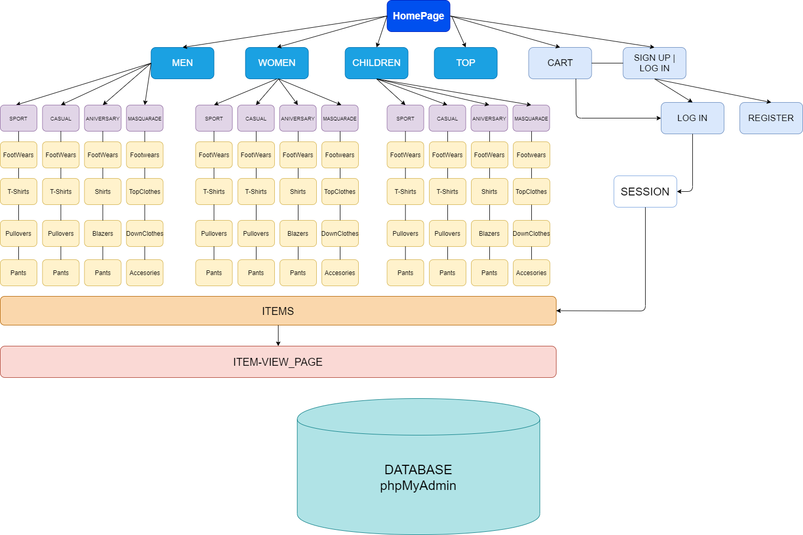

Autorii
- Mereuța Ion (2A1)
- Pogoneț Artiom (2A7)
1.Scop
Noi am avut scop să dezvoltăm o aplicație Web ce reprezintă un magazin de haine online,
unde persoanele autentificate sau nu, pot sa vizioneze asortimetul de produse care oferă magazinul
online,la fel și parametrii acestora(ex. preț, material).Asortimentul include diverse categorii(men,women,children),fiecare categorie include
subcategorii(pants,footwear etc.),fiecare produs în parte poate fi văzut detaliat prin accesarea acestuia.Fiecare persoană accesând site-ul va avea posibilitate
de înregistrate a unui cont după care logarea în acest cont,pentru a putea beneficia de procesul de cumpărare sau
salvare a produselor favorite în coș,care va fi salvat și după delogare.Pe lângă acestea clienții vor putea viziona cele mai populare produse din asortiment.
-Clienții neînregistrați
- Au posibilitatea de a se înregistra indicîn un username, adresa sa electroniă și parola
(parola trebuie sa contina o litera majuscula, să fie din minim 8 caractere și să conțină măcar o cifră).
-
Au posibilitatea de a viziona lista de produse,din toate categoriile din asortimentul oferit de magazinul online.
-
Posibilitatea de acces la pagina de TOP a produselor magazinului,unde pot vedea cele mai populare produse din asortiment.
-Clienții înregistrați & logați
-
Posibilitaea de a se loga,utilizând parola, username-ul și adresa electronică pe care au înregistrat-o anterior.
-
Au posibilitatea de a viziona lista de produse,din toate categoriile din asortimentul oferit de magazinul online.
-
Posibilitatea de acces la pagina de TOP a produselor magazinului,unde pot vedea cele mai populare produse din asortiment.
-
Au în favoare coșul care permite salvarea produselo favorite,la fel aceste vor fi salvate și după delogare.
-
Dispun de butonul 'export' pe pagina coșului care le va permite să salveze coșul sub formă de tabel în format CSV pe dispozitivul
personal.
-Administratorul
-
Are acces către toate tebelele bazei de date,la fel și este responsabil de gesionarea bazei de date.
-
Participă la introducerea noilor produse în asortiment,precum și ștergera acestora, pe lâgă aceasta poate modifica datele introduse anterior.
-
Poate fi contactat de către client prin contactele prezente în footer-ul site-ului.
-
Are acces la datele clienților înregistrați.
2.Pașii de dezvoltare a aplicației
- Crearea schemei paginilor site-ului pe foaie
- Crearea paginilor (front-end HTML)
- Crearea design-ului fiecărei pagini (front-end CSS)
- Crearea bazei de date 'phpmyadmin',a tabelelor și alimentarea acestora
- Implementarea php-ului și conectarea site-ului la baza de date
- Implementarea javascript-ului pentru exportarea coșului în format CSV
- Testare
3.Tehnologiile utilizate
-
HTML5 - este un limbaj pentru structurarea și prezentarea conținutului pentru World Wide Web, o tehnologie nucleu pentru Internet propusă inițial pentru software-ul Opera.
-
CSS - este un standard pentru formatarea elementelor unui document HTML. Stilurile se pot atașa elementelor HTML prin intermediul unor fișiere externe sau în cadrul documentului.CSS se poate utiliza și pentru formatarea elementelor XHTML, XML și SVGL.
-
PHP - este un limbaj de programare. Numele PHP provine din limba engleză și este un acronim recursiv : Php: Hypertext Preprocessor. Folosit inițial pentru a produce pagini web dinamice, este folosit pe scară largă în dezvoltarea paginilor și aplicațiilor web.
-
phpMyAdmin - este un sistem de gestiune a bazelor de date MySQL liber, open source, scris în PHP și destinat administrării bazelor de date prin intermediul unui browser web. Prin phpMyAdmin se pot întreprinde diverse operații cum ar fi crearea, modificarea sau ștergerea bazelor de date, tabelelor, câmpurilor sau rândurilor; executarea de comenzi (interogări) SQL.
-
XAMPP - este un pachet de programe free software, open source și cross-platform web server, care constă în Apache HTTP Server, MySQL database și interpretoare pentru scripturile scrise în limbajele de programare PHP și Perl.
-
JavaScript - este un limbaj de programare orientat obiect bazat pe conceptul prototipurilor.[5] Este folosit mai ales pentru introducerea unor funcționalități în paginile web, codul JavaScript din aceste pagini fiind rulat de către browser.
4.Activitatea membrilor echipei
- Front-End (HTML & CSS) - Pogoneț Artiom | Mereuța Ion
- Baza de date (phpMyAdmin) - Pogoneț Artiom | Mereuța Ion
- Login - Pogoneț Artiom
- Register - Pogoneț Artiom
- Adaptarea coșului - Mereuța Ion
- Export datelor CSV - Mereuța Ion
- Alimetarea RSS - Pogoneț Artiom
5.Codul sursă (GitHub)
6.Arhitectura site-ului
